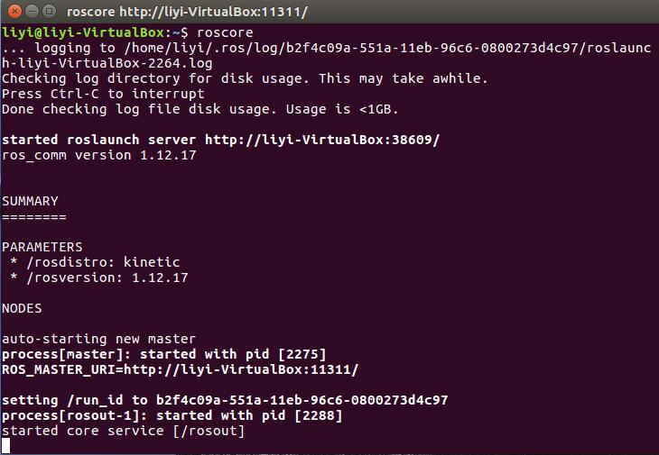
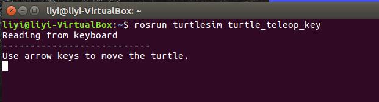

ROS开发环境
1. 版本选择
| ROS版本 | Ubuntu 版本 |
|---|---|
| ROS Kinetic Kame | Ubuntu 16.04 |
| ROS Melodic Morenia | Ubuntu 18.04 |
| ROS Noetic Ninjemys | Ubuntu 20.04 |
ros的各个版本之间不相互兼容，安装前需要注意版本对应
2. 添加软件源
使用中科大的镜像源安装ROS
sudo sh -c '. /etc/lsb-release && echo "deb http://mirrors.ustc.edu.cn/ros/ubuntu/ $DISTRIB_CODENAME main" > /etc/apt/sources.list.d/ros-latest.list'
3. 添加keys
sudo apt-key adv --keyserver hkp://ha.pool.sks-keyservers.net:80 --recv-key 421C365BD9FF1F717815A3895523BAEEB01FA116
apt-key用于管理Debian Linux系统中的软件包密钥。每个发布的deb包，都是通过密钥认证的，apt-key用来管理密钥。
4. 更新软件源
sudo apt-get update
sudo apt-get upgrade
update是更新软件列表，upgrade是更新已安装的软件
5. 安装ROS
ros官方提供四种安装方式，Ubuntu16.04安装Kinetic版本
桌面完整版安装
包括ROS、rqt、rviz、通用机器人函数库、2D/3D仿真器、导航以及2D/3D感知功能
sudo apt-get install ros-kinetic-desktop-full桌面版安装
包含ROS、rqt、rviz以及通用机器人函数库
sudo apt-get install ros-kinetic-desktop基础版安装
包含ROS核心软件包、构建工具以及通信相关的程序库，无GUI工具
sudo apt-get install ros-kinetic-ros-base单独软件包安装
可以用来安装指定软件包，这种安装方式在运行ROS缺少某些package依赖时会经常用到。
sudo apt-get install ros-kinetic-PACKAGE用包名替代上述命令中的
PACKAGE可安装相应的功能包
6. 配置ROS
6.1. 初始化rosdep
sudo rosdep init
sudo rosdep update
这里可能会因为github站点网络链接问题而报错，使用代理即可解决
6.2. ROS环境变量设置
echo "source /opt/ros/kinetic/setup.bash" >> ~/.bashrc
相当于每次打开终端都执行遍source命令
6.3. 安装rosinstall
sudo apt-get install python-rosinstall
7. 测试ROS环境
7.1. 启动roscore
roscore
成功启动后如下图所示

7.2. 启动海龟测试节点
rosrun turtlesim turtlesim_node
turtlesim_node节点是模拟海龟运动的节点

7.3. 启动控制节点
rosrun turtlesim turtle_teleop_key
turtle_teleop_key节点是键盘控制节点
